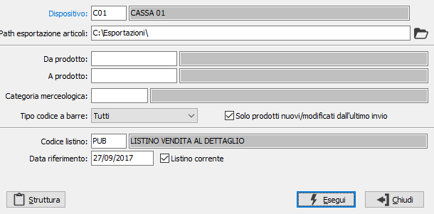

Invio anagrafiche
La procedure consente di inviare le anagrafiche articoli al dispositivo remoto selezionato. Il pulsante Struttura, presente solo se richiesto un dispositivo di tipo indiretto, fornisce una guida al formato del file di esportazione delle anagrafiche. La procedura non è utilizzabile per dispositivi di tipo integrato.

DISPOSITIVO: codice del dispositivo a cui collegarsi per l'invio delle anagrafiche articoli. Sul campo sono presenti le funzioni di ricerca (F9). Se il dispositivo è di tipo diretto sarà visualizzata al posto della path esportazione articoli l'indicazione del database di Explora.
PATH ESPORTAZIONE ARTICOLI: il campo è attivo solo per dispositivi di tipo indiretto ed indica il percorso su cui sarà generato il file di esportazione dei prodotti.
DA PRODOTTO: codice dell'articolo, presente in anagrafica Prodotti, da cui si desidera iniziare la selezione. Confermando a vuoto, la selezione inizia con il primo prodotto valido. Sul campo è attiva la ricerca (F9) sull’anagrafica prodotti.
A PRODOTTO: codice dell'articolo, presente in anagrafica Prodotti, a cui si desidera terminare la selezione. Confermando a vuoto, la selezione termina con l’ultimo valido. Sul campo è attiva la ricerca (F9) sull’anagrafica prodotti.
CATEGORIA MERCEOLOGICA: codice della categoria merceologica, riferita ai prodotti, per cui effettuare la selezione. Sul campo sono attive le funzioni di ricerca (F9).
TIPO CODICE A BARRE: tipo di codice a barre, riferito ai codici dei prodotti, per cui effettuare l'esportazione; è possibile esportare tutti i tipi di codice scegliendo l'opzione Tutti.
SOLO PRODOTTI NUOVI/MODIFICATI DALL?ULTIMO INVIO: consente di trasferire soltanto le anagrafiche dei prodotti nuovi o modificati dall'ultimo trasferimento (casella con segno di spunta).
CODICE LISTINO: indica il codice del listino da cui leggere i prezzi dei prodotti esportati. Sul campo sono attive le funzioni di ricerca (F9).
DATA RIFERIMENTO: definisce la data, tramite cui ricercare i prezzi all'interno del listino. Saranno utilizzati solo i prezzi le cui date di validità comprendono, come periodo, la data di riferimento.
LISTINO CORRENTE: indica di utilizzare il listino corrente, quello valido alla data di sistema (casella con segno di spunta).